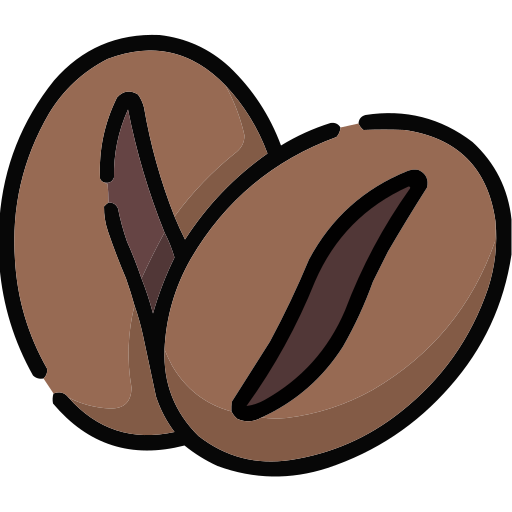

Our taste
At our coffee shop, we're dedicated to crafting the perfect cup of coffee, where every sip is a journey through flavor and quality.
The Types we serve.
Drip Coffee
Celebrate the simple pleasure of life with each drip, as the finest beans transform into your daily moment of comfort and delight.
Moka Pot Coffee
Unlock the hidden melodies of coffee as the Moka pot serenades your senses with rich, dark notes in every brew.
Turkish Coffee
Savor the timeless delight of Turkish coffee, where each cup holds a thousand stories, whispered by the grounds settled at the bottom.
Our Stores.
The Bean Store.
Lynden park.
305, lynden park mall
+1 226-966-1234
The Bean Store.
The George St
65 main ave, The george st
+1 226-966-1234